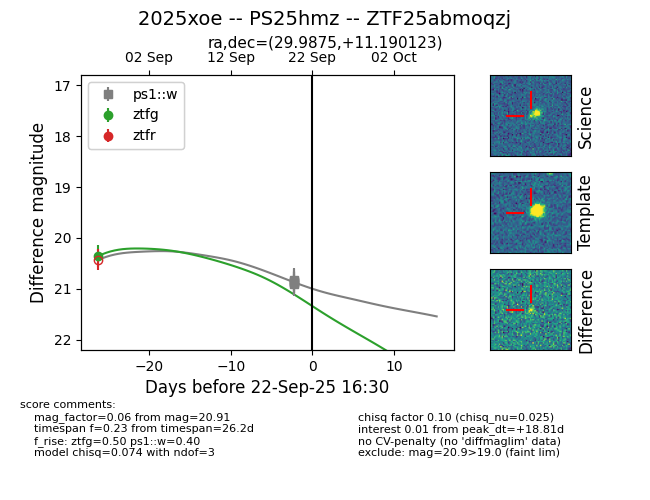

FINK: ZTF25abmoqzj
Lasair: ZTF25abmoqzj
ALeRCE: ZTF25abmoqzj
TNS: 2025xoe
YSE: 2025xoe
ZTF25abmoqzj (ztf,fink)
2025xoe (tns,yse)
PS25hmz (panstarrs)
equatorial (ra, dec) = (29.9875,+11.19012)
galactic (l, b) = (148.6363,-48.23269)

last ps1::w=20.91, ztfg=20.35
6 ps1::w, 1 ztfg detections